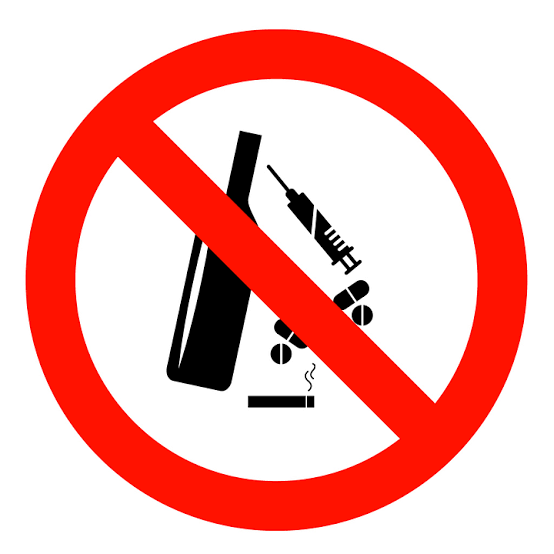

PENGERTIAN NARKOBA
Narkotika adalah zat atau obat baik yang bersifat alamiah, sintetis, maupun semi sintetis yang menimbulkan efek penurunan kesadaran, halusinasi, serta daya rangsang. Sementara menurut UU Narkotika pasal 1 ayat 1 menyatakan bahwa narkotika merupakan zat buatan atau pun yang berasal dari tanaman yang memberikan efek halusinasi, menurunnya kesadaran, serta menyebabkan kecanduan.
